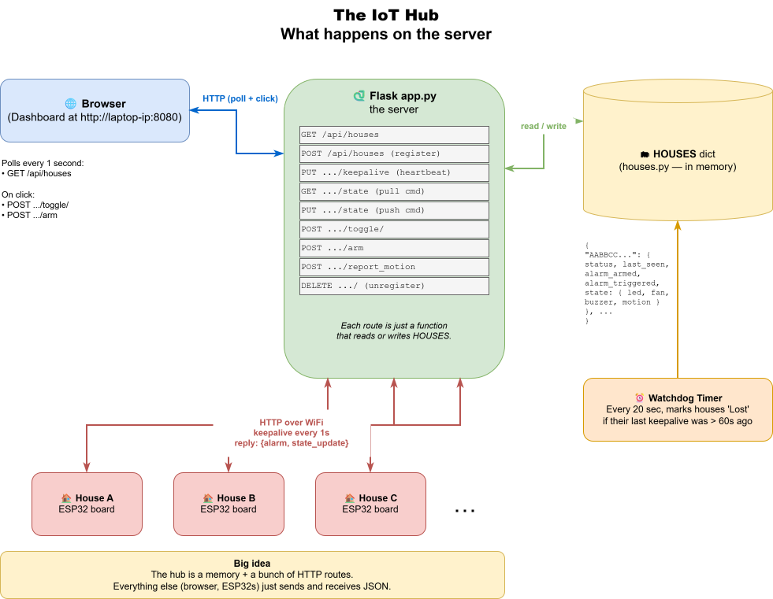

Day 1 — The Hub
Goal: Get the Flask hub running and learn how the dashboard talks to houses over HTTP. By the end you'll register a fake "house" with a single command and watch it appear in your browser.
Time: ~2 hours.
The big picture
Here's the whole system you're building. Today is the green box in the middle — the hub — plus the browser dashboard. The ESP32 "houses" join later in the week.

Part 1 — Setup (15 min)
🛠 Try this(diagrams/01_iot_hub.drawio)
- Open PyCharm Community.
- File → Open → navigate to
C:\Projects\sigma\claude\implementation\iot_hub→ Open. - PyCharm sees
requirements.txtand offers to create a venv. Click Create. - PyCharm tries to install
Flask==3.0.3from the internet — it'll fail because we're offline. Open the Terminal tab at the bottom and run:bash pip install --no-index --find-links wheels -r requirements.txt - Right-click
app.pyin the project tree → Run 'app'. - Open http://localhost:8080/ in your browser.
✅ Milestone 1.1: You see the dashboard with the message "Waiting for houses to register…".
Part 2 — How HTTP works (20 min)
When the browser asks for a web page, it sends an HTTP request like:
GET /api/houses HTTP/1.1
Host: localhost:8080
The server replies with a response:
HTTP/1.1 200 OK
Content-Type: application/json
[]
The four most common request methods:
| Method | "Verb" meaning | Example |
|---|---|---|
GET |
"give me" | Browser asking for the dashboard |
POST |
"create a new thing" | A house registering |
PUT |
"replace this thing" | A house pushing its current state |
DELETE |
"remove this thing" | A house unregistering |
💡 Why four verbs? It lets the server know your intent. The same URL /api/houses/AABB means "look this up" with GET, "delete it" with DELETE. Same address, different action.
🤔 Why is keepalive a PUT but toggle a POST? (idempotency + retries)
You could build this whole API with POST for everything — it would work. But the verbs carry a promise about idempotency: whether doing something once and doing it ten times leave the same result.
PUT,GET,DELETEare idempotent. Repeating them is harmless.PUT /keepaliveten times in a row = still just "I'm alive, last_seen = now."POSTis NOT idempotent.POST /toggle/ledtwice flips the LED back — a different result each time.
Why this actually matters at camp: WiFi drops packets. If a request times out, can the board safely re-send it?
- Re-sending a PUT keepalive → totally safe (same result).
- Re-sending a POST toggle → dangerous (might flip the LED back).
So the verb is a warning label: PUT/GET/DELETE mean "safe to retry"; POST means "think before you retry." That's why keepalive (safe to repeat) is PUT, and toggle/register/report_motion (actions with side-effects) are POST.
🤔 Why can't I just register a house with GET (by typing a URL)?
It would be convenient — a browser address bar can only do GET, so "register by visiting a link" sounds handy. But there's an iron rule: GET must be safe — it reads, it never changes anything. Registering creates a house (a side-effect), so it must be a POST.
This isn't pedantry. Lots of things follow GET links automatically, without a human clicking: browser prefetchers, link-preview bots (Slack/Discord unfurling a pasted URL), search-engine crawlers, antivirus URL scanners. If GET registered a house, any of them could spawn phantom houses just by looking at a link.
💥 True story (2005): Google's "Web Accelerator" pre-fetched every link on a page to feel faster. Many web apps used
GETlinks like/delete?id=5for their buttons. The accelerator dutifully pre-fetched them all — and silently deleted users' data across the internet. The lesson the whole industry learned: never put an action behind aGET.
So to register, you POST — with curl, the DevTools console, or the ESP32's code. Not by typing a URL.
What is curl?
curl is a tiny command-line tool that sends an HTTP request and prints the response — a browser with no window. Your browser also sends HTTP requests, but it wraps them in a pretty page. curl shows you the raw conversation, which is perfect for learning and testing. The name means "see URL" (cURL).
Anatomy of a curl command you'll use a lot:
curl -X POST http://localhost:8080/api/houses -H "Content-Type: application/json" -d '{"unique_id":"FAKE001"}'
# └──┬──┘ └──────────────┬──────────────┘ └──────────────┬──────────────┘ └──────────────┬──────────────┘
# verb the URL (where) a header (extra info) the body (the data you send)
- No
-Xgiven →curldefaults to GET. -X POST/-X PUT/-X DELETE→ pick the verb.-H→ add a header (we use it to say "my body is JSON").-d→ the data/body to send.
🛠 Try this in PyCharm's terminal (a plain GET — no flags needed):
curl http://localhost:8080/api/houses
You should see [] — an empty list.
Part 2b — What the server says back (status codes) (5 min)
Every response starts with a status code — a 3-digit number that says how it went, before you even read the body. You'll see these pop out of curl in the next parts, so know them:
| Code | Nickname | Means | When you'll see it |
|---|---|---|---|
| 200 | OK | It worked. | Most successful requests (keepalive, toggle, state). |
| 201 | Created | Made a new thing. | When you register a house (POST /api/houses). |
| 400 | Bad Request | You sent something wrong. | Missing/!malformed JSON — e.g. you forgot the Content-Type header. |
| 404 | Not Found | That thing doesn't exist. | Asking about a house ID the hub never heard of. |
💡 The first digit is the mood: - 2xx = success 🟢 - 4xx = you messed up (your request) 🟡 - 5xx = the server messed up (a bug in the hub) 🔴
So 404 is never the hub's fault — it's saying "I looked, that house isn't here." A 500 would be the hub's fault. (There's also 1xx and 3xx, but you won't meet them in this project.)
🛠 See a code yourself: add -i to any curl to print the status line at the top:
curl -i http://localhost:8080/api/houses
The first line will read HTTP/1.1 200 OK.
Part 3 — Register a fake house (20 min)
The dashboard is empty because no boards have registered yet. Let's pretend to be a board using curl.
🛠 Try this:
curl -X POST http://localhost:8080/api/houses \
-H "Content-Type: application/json" \
-d '{"unique_id":"FAKE001","ip_address":"127.0.0.1"}'
Response: {"ok": true, "unique_id": "FAKE001"}.
Now refresh the browser. A row appears! Status: Active.
🧪 No terminal? Use the browser console instead. Open the dashboard (
http://localhost:8080/), press F12 → Console tab, and paste:javascript await fetch("/api/houses", { method: "POST", headers: { "Content-Type": "application/json" }, body: JSON.stringify({ unique_id: "FAKE001", ip_address: "127.0.0.1" }) }).then(r => r.json())Same result —{ok: true, unique_id: "FAKE001"}— nocurl, no quoting headaches. This works because the page came from the hub, so the relative path/api/housespoints straight at it. It's also exactly whatdashboard.jsdoes when a button is clicked.
🛠 Try this: send a "keepalive" — this is what real boards do every second to prove they're alive:
curl -X PUT http://localhost:8080/api/houses/FAKE001/keepalive \
-H "Content-Type: application/json" -d '{"ip_address":"127.0.0.1"}'
Response: {"alarm": false, "state_update": false}.
How keepalive really works (and why it exists)
This is the heartbeat of the whole system, so it's worth understanding properly.
The problem it solves: the hub has no way to know if a board is still alive. A board could be unplugged, crashed, or out of WiFi range — and the hub would never be told. There's no "the board died" message, because a dead board can't send one. So instead, every board promises: "I'll wave at you every second. If I stop waving, assume I'm gone." That wave is the keepalive.
Each keepalive does two jobs at once:
-
"I'm still here." The hub writes down the current time as that house's
last_seen. A separate watchdog wakes up every 20 seconds and checks: has any house gone quiet for more than 60 seconds? If so → mark itLost(the row turns red) and switch off its alarm. -
The hub's only chance to talk back. Here's the subtle part: the hub can never phone the board first. The board is behind the WiFi router; the hub can't reach in and start a conversation. The board always speaks first, and the hub can only answer. So the hub piggybacks any instructions onto the keepalive reply:
alarm: "fire your buzzer right now"state_update: "the dashboard changed your settings — callGET /stateto pull them"
Both false means "nothing for you, carry on."
💡 This pattern is called polling: the board keeps asking "anything for me? anything for me?" once a second, and the hub answers. It's not the fanciest design (a real-time system might use WebSockets so the hub can push instantly), but it's dead simple to understand and debug — and one second of delay is invisible to a human flipping a light switch.
⚡ Stretch — watch the watchdog work: stop sending keepalives for this house. Refresh the dashboard every few seconds. After ~60 seconds the row flips to Lost and turns red. Start sending keepalives again → it goes back to Active. You just watched the heartbeat die and revive.
Part 4 — Read the routes (20 min)
Open implementation/iot_hub/app.py. Find the # ---------- per-house ---------- comment.
🛠 Try this: trace what happens when the browser clicks the LED toggle button.
▶ Solution
- Browser sends
POST /api/houses/FAKE001/toggle/led(look atdashboard.jsline ~94). - Flask matches the route
@app.route("/api/houses/<uid>/toggle/<device>", methods=["POST"])and callstoggle(). toggle()validates the device name, then callshouses.toggle_device(uid, device).houses.toggle_deviceflipsstate["led"]["active"]and setspending_state_update = True.- Returns
{"ok": True}.
Next time the (imaginary) board sends a keepalive, it gets state_update: true and pulls the new state.
Part 5 — Add your own endpoint (40 min)
The hub has no "panic button" — a single endpoint that disarms ALL alarms at once. Let's add one.
Spec
- Method:
POST - URL:
/api/disarm_all - Body: none
- Response:
{"ok": true, "count": <how many were disarmed>} - Behavior: walks every house and sets
alarm_armed = False,alarm_triggered = False, and turns off the buzzer state.
Step 1 — add the data-layer function
Open houses.py. Add this function (you fill in the TODO):
def disarm_all() -> int:
"""Disarm every house. Returns how many were armed before."""
count = 0
with _LOCK:
for house in HOUSES.values():
if house["alarm_armed"]:
count += 1
# TODO: clear alarm_armed, alarm_triggered, and the buzzer
# (look at how arm_alarm() does it)
return count
▶ Solution
def disarm_all() -> int:
"""Disarm every house. Returns how many were armed before."""
count = 0
with _LOCK:
for house in HOUSES.values():
if house["alarm_armed"]:
count += 1
house["alarm_armed"] = False
house["alarm_triggered"] = False
house["state"]["buzzer"]["active"] = False
house["pending_state_update"] = True
return count
Step 2 — add the route
Open app.py. Add this near the other arm route:
@app.route("/api/disarm_all", methods=["POST"])
def disarm_all():
# TODO: call houses.disarm_all() and return the right JSON
pass
▶ Solution
@app.route("/api/disarm_all", methods=["POST"])
def disarm_all():
n = houses.disarm_all()
return jsonify({"ok": True, "count": n})
Step 3 — test it
Restart the hub (PyCharm's red square then green play, or Ctrl-C and re-run).
# Register a couple of fake houses, arm them
curl -X POST http://localhost:8080/api/houses -H "Content-Type: application/json" \
-d '{"unique_id":"FAKE001","ip_address":"127.0.0.1"}'
curl -X POST http://localhost:8080/api/houses -H "Content-Type: application/json" \
-d '{"unique_id":"FAKE002","ip_address":"127.0.0.1"}'
curl -X POST http://localhost:8080/api/houses/FAKE001/arm \
-H "Content-Type: application/json" -d '{"armed":true}'
curl -X POST http://localhost:8080/api/houses/FAKE002/arm \
-H "Content-Type: application/json" -d '{"armed":true}'
# Hit the panic button
curl -X POST http://localhost:8080/api/disarm_all
# expect: {"ok": true, "count": 2}
Refresh the dashboard — both houses should now show "Disarmed".
✅ Milestone 1.2: Your panic button works. Show a counsellor.
Part 6 — Stretch challenges (10 min)
⚡ Easy: Add a GET /api/stats endpoint that returns {"total": N, "active": A, "lost": L, "armed": M}.
⚡ Medium: Add a button to the dashboard that calls your /api/disarm_all. (Edit dashboard.js.)
⚡ Hard: The current keepalive returns {alarm, state_update}. Add a third flag, restart_requested, that students can set via a new POST /api/houses/<uid>/request_restart endpoint — useful for forcing a board to reload.
What you learned today
- HTTP verbs: GET, POST, PUT, DELETE — same address, different intent.
- Status codes: 200 OK, 201 Created, 400 (you messed up), 404 (not found), and the "first digit is the mood" rule.
curl— a browser with no window;-Xverb,-Hheader,-dbody,-ito see the status line.- Flask routes:
@app.route("/path", methods=["..."]). - The hub stores everything in a Python dict (
HOUSES). - Keepalive = the heartbeat: the board waves every second so the watchdog knows it's alive, and it's the hub's only chance to send instructions back (polling).
Tomorrow: we leave the hub running and start coding on the actual ESP32. → day2.md